Some Comments on Lighting and Material Specification
If you want to get started quickly with hev-lightEditor without reading all of this documentation, try this:
hev-lightEditor > $IRIS_CONTROL_FIFO
The program can also be run in the immersive environment, but to do that requires a different startup procedure. For more details about how to run hev-lightEditor, see Running hev-lightEditor.
hev-lighteditor works by sending IRIS control commands to modify the scene graph. This provides interactive control for the following lighting tasks:
In the future, hev-lightEditor will enable the user to interactively control the characteristics of the light model.
Here's a typical way that hev-lightEditor could be used:
hev-lightEditor > $IRIS_CONTROL_FIFO
The section Running hev-lightEditor describes how to invoke hev-lightEditor in more detail.
For more information about the meaning of the various lighting parameters used by hev-lightEditor, you can look at:
OpenGL Programming Guide, Second Edition
Mason Woo, Jackie Neider, and Tom Davis.
Chapter 5 is all about lighting and material surface properties. This chapter will make it clear that lighting, as such, is only part of the story. The other side of the coin is the specification of surface material properties. These properties interact with the lighting environment to determine how polygons and other entities are rendered. hev-lightEditor does not deal with material properties.
hev-lightEditor is designed to be used either on the desktop or in the immersive environment. In order to accomplish this, the design might not be ideal for either environment. The program controls lighting by means of a GUI with standard user interface widgets, so the controls of light location and direction are interactive but they are indirect. To move a light, you manipulate widgets that specify the position of the light; as you work with those widgets, the position of the light in the virtual scene is continuously updated.
The hev-lightEditor GUI is currently divided into four tabbed panels:
A Note on Numeric Fields in the GUIhev-lightEditor uses many standard user interface widgets: drop down menus, on/off buttons, radio buttons, sliders, and so on. There is one type of widget that is slightly unusual; it is a combination of a numeric text entry field and a slider. All of the numeric fields that you see in this interface are widgets of this type.
You can click on any numeric field and enter a value by typing it in, or you can click down on the field and drag your pointer to the left and right. As you drag your pointer to the left or right, it acts like a slider, continuously changing the value in the field. When used with a 3-button mouse, dragging with the left mouse button changes the value with the smallest increment; the middle mouse button changes the value with a larger increment and the right mouse button changes it with a still larger increment.
In many cases, this type of numeric field is accompanied by a slider or some other manipulator that has similar functionality. We include these multiple methods (and multiple widgets) in order to provide alternatives to the user. One other substantial advantage of the numeric text entry / slider combination widget is that it conserves screen space, which is particularly important when used in the immersive environment..
At the top of the light sources panel, there are a few widgets that apply to all types of light sources:
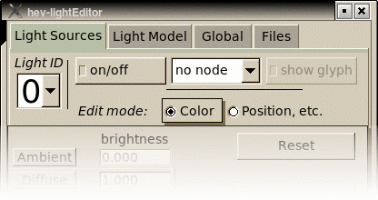
Here is a description of each widget:
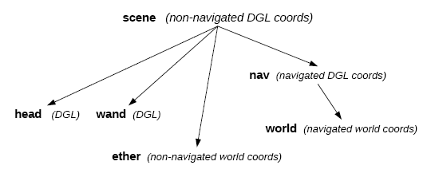
A description of these nodes and their associated coordinate systems is beyond the scope of this documentation.When you have selected the Color edit mode, hev-lightEditor displays a set of widgets that enable you to manipulate the color(s) of the light source:
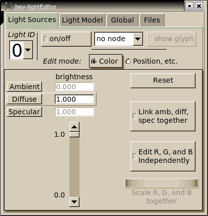
The widgets:
When you have selected "Edit R, G, and B Independently", then the interface is slightly reconfigured:
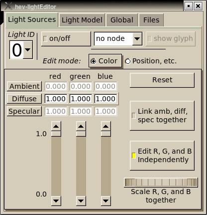
In this case, you have sliders that let you change the red, green, and blue components of each color independenty. Additionally, the wheel widget in the lower right corner becomes operational, which enables you to scale R, G, and B at the same time.
When you have selected the Position edit mode, hev-lightEditor displays a set of widgets that enable you to manipulate the light's location, direction, and related settings. The Light Type widget lets you specify what type of light you want:
Here's the interface for the infinite light source:
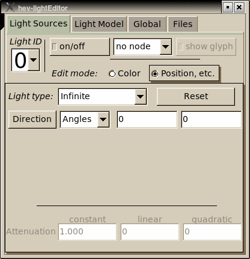
The widgets:
Here's the interface for the omni-directional light source:
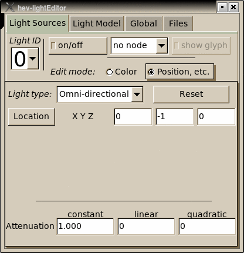
The widgets:
Here's the interface for the spot light source:
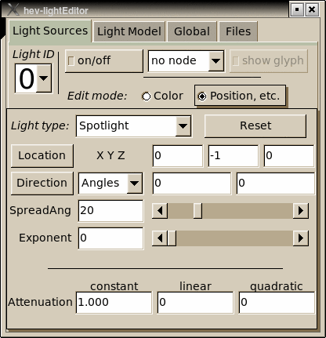
The widgets:
Attenuation of the omni-directional and spot light sources an be specified by the three widgets at the bottom of the panel:
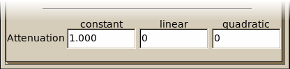
These three attenuations (constant, linear, and quadratic) are described in detail in the OpenGL Programming Guide. They determine how the brightness of omni-directional and spot lights drop off as objects move away from the light sources.
The Light Model panel enables the user to manipulate the characteristics of the global lighting model. The lighting model is described in detail in the OpenGL Programming Guide. Here's the interface for the light model as it first appears:
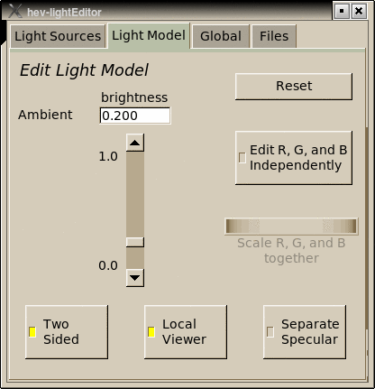
The widgets:
When you have selected "Edit R, G, and B Independently", then the interface is slightly reconfigured:
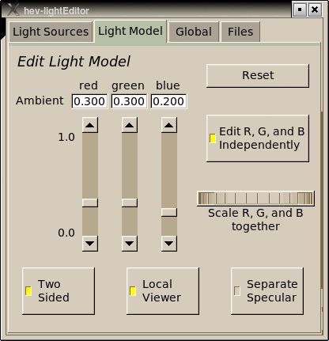
In this case, you have sliders that let you change the red, green, and blue components of each color independenty. Additionally, the wheel widget to the right becomes operational, which enables you to scale R, G, and B at the same time.
The Global panel is currently unimplemented. See Future Development.
The Files panel enables you to read and write files for light sources and the light model. All light source files are in OSG text format; light model files are in IRIS format. The widget at top of this panel lets you specify whether you want to read or write the files.
When Read has been selected, the interface looks like this:
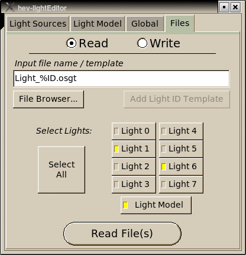
The widgets:
The text entry box specifies the name or name template for the file (or files) to be read. If "%ID" appears in the file name, then it is a template for generating file names for reading multiple files. If it is present, "%ID" is replaced either by a single digit 0 through 7 corresponding to the index of the light source being read, or by "Model" if a light model file is being read.
The "File Browser..." button will bring up a file browser in a separate window that you can use to select the desired file name.
The "Add Light ID Template" button is available whenever "%ID" does not appear in the file name. Pressing this button will convert the file name into a template by adding "%ID" in an appropriate place in the file name.
Typically, ".osgt" should be at the end of the file name. If you are reading a light model file, the final ".osgt" will be removed and ".iris" will be substituted.
When Write has been selected, the interface looks like this:
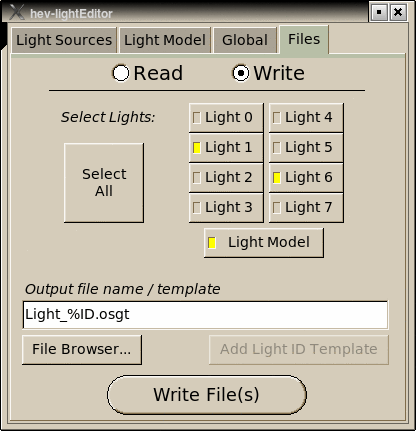
The widgets:
The text entry box specifies the name or name template for the file (or files) to be written. If "%ID" appears in the file name, then it is a template for generating file names for writing multiple files. If it is present, "%ID" is replaced either by a single digit 0 through 7 corresponding to the index of the light source being written, or by "Model" if a light model file is being written.
The "File Browser..." button will bring up a file browser in a separate window that you can use to select the desired file name.
The "Add Light ID Template" button is available whenever "%ID" does not appear in the file name. Pressing this button will convert the file name into a template by adding "%ID" in an appropriate place in the file name.
Typically, ".osgt" should be at the end of the file name. If you are writing a light model file, the final ".osgt" will be removed and ".iris" will be substituted.
hev-lightEditor runs in concert with irisfly. As the user manipulates the hev-lightEditor GUI, IRIS commands are generated to reflect these interactions. These IRIS commands are written to standard output. In order to transmit these commands the output of hev-lightEditor should be redirecty to $IRIS_CONTROL_FIFO.
hev-lightEditor > $IRIS_CONTROL_FIFO
It is also important to know that IRIS sends data back to hev-lightEditor through a FIFO named /tmp/hev-lightEditor-fifo-USER, where USER is replaced by your user name. This communication back from IRIS occurs during initialization of hev-lightEditor; it is used to enable hev-lightEditor to control lights that were created or loaded before it was started.
If you want to run hev-lightEditor in stand-alone mode (without communicating with IRIS) you can do so by invoking it this way:
hev-lightEditor > /dev/null
The program will operate normally, but it will take about six (6) seconds to start up. This delay occurs while the program is trying to establish two-way communication with IRIS. Eventually this attempt times out and the program will function normally.
hev-lightEditor has the following command line arguments:Scale all light intensities simultaneously. This would allow the user to uniformly lighten or darken the entire scene at the same time. It would maintain the balance among all light sources and the light model without the need of manipulating each individually.
Display IRIS scene graph node names associated with each light source.
The effect of lighting on an object rendered by OpenGL and OSG is determined by the interaction of light sources, the light model, and the material properties of the object. Both light sources and materials specify ambient, diffuse, and specular rendering effects, and the light model specifies an ambient component. This results in a myriad of approaches for achieving desired lighting effects and I have often gotten confused by the many options.
I would like to suggest an approach to specifying materials and lighting that might simplify the situation. This simplification means that some possible rendering effects are not possible, but it provides an initial framework for working with lights and materials. You can always break out of this framework if you need different types of effects.
The specific suggestions are based on the following general ideas:
Here are some more specific suggestions on specifying materials and lights that are based on these ideas:
As you specify material and light properties and add multiple lights to a scene, it is important to understand a major difference between lighting in the real world and lighting in the virtual world. In the real world, as you add more lights to a scene, objects will get brighter and brighter. This is also true in the virtual world, but only up to a point. In the virtual world, we can think of colors as being represented as RGB components each of which ranges from 0 to 1. When you add another light to the virtual scene, the RGB components will get higher, but they can't go above 1.
Furthermore, one of the red, green, or blue components might saturate to 1.0 before the others. So the others can still increase while the other is pegged at 1.0. This can result in color shifts when adding lighting. And when the color of an object (or a portion of an object) reaches the maximum of full white (1,1,1) then you lose the continuous light source shading that is critical for revealing the shape of the surface. So if you see objects getting washed out, or see color shifts when you add more lights, you should think about reducing the intensities of some or all of your light sources.